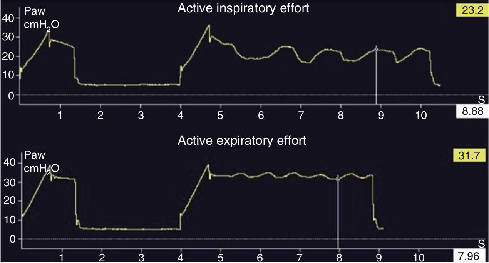

هنگام اندازه گیری PPLAT چنانچه بیمار تلاش فعال دمی انجام دهد و در نتیجه آن یک موج فشار منفی در ریه بیمار ایجاد گردد، و یا تلاش فعال بازدمی انجام دهد و در نتیجه یک موج فشار مثبت در ریه ایجاد کند، تحت این شرایط مقدار PPLAT فاقد ثبات است و اندازه گیری آن توصیه نمی شود چرا که عضلات بیمار شل نیست.

هنگام مانور انسداد پایان دمی کدام مورد زیر صحیح نیست؟
۱ - اگر عضلات بیمار کاملا شل باشد و نشتی وجود نداشته باشد، فشار پلاتو دارای ثبات می گردد
۲ - در صورت تلاش دمی یک موج فشار منفی ایجاد میشود
۳ - بین دو موج فشار غیرطبیعی می توان فشار پلاتو را اندازه گرفت
۴ - در صورت تلاش بازدمی یک موج فشار مثبت ایجاد میشود
۵ - افت تدریجی فشار پلاتو دلیل وجود نشت است